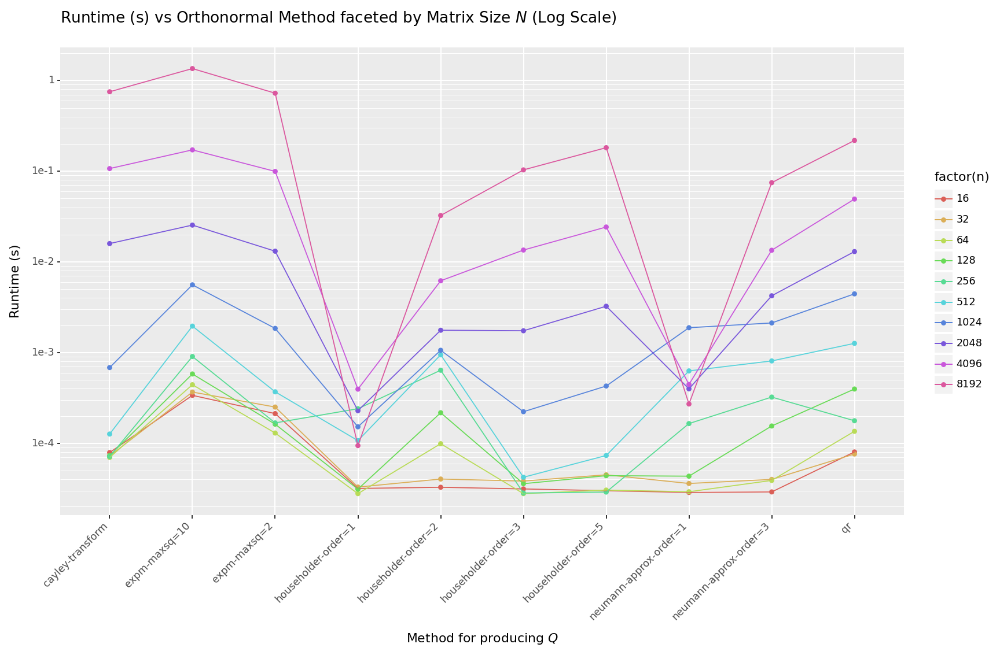
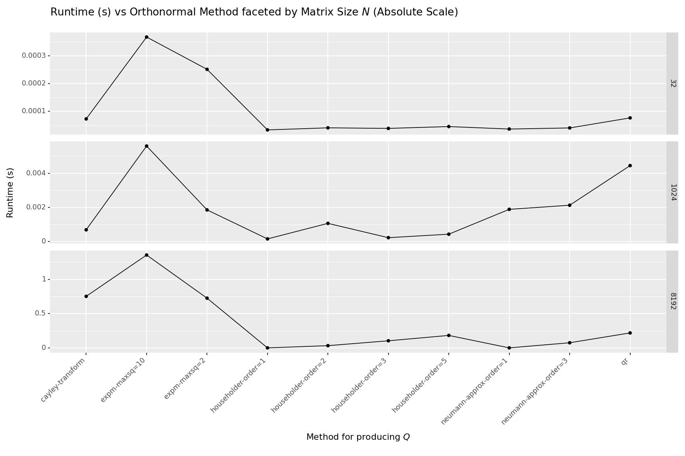

Learning Orthonormal Matrices For Deep Learning Pipelines
Prelude¶
I have been researching alternative methods to initialize and parameterize dense layers for use in deep learning pipelines. Orthonormal matrices have several interesting properties, including fast inverses (via their transpose) and unit eigenvalues which make them interesting candidates for several methods.
When coding up solutions, however, the naive QR decomposition proved to be far too slow and cumbersome for generating these matrices. So I turned to the Matrix Cookbook and “got cooking” looking for alternative methods of parametrization.The Matrix Cookbook — an invaluable reference for matrix identities and decompositions.
This post is about my journey to find the fastest way to parameterize them in modern machine learning stacks. To spoil the surprise, there are methods which are hundreds or thousands of times faster for large matrices than the QR decomposition.

Introduction to Orthonormal Matrices¶
An orthonormal matrix $Q \in \mathbb{R}^{N \times N}$ is a square matrix whose rows and columns are orthonormal vectors. In other words, the dot product of any two different rows (or columns) of the matrix is zero, and the dot product of a row (or column) with itself is one. Such a matrix has several properties which make it useful in a machine learning pipeline.
| Property | Comment |
|---|---|
| Fast Inverses | If $Q$ is orthonormal, then its inverse is $Q^T$, and $QQ^T = Q^TQ = I$. For algorithms which require forward and backward projections (regression often comes to mind), these matrices provide quick inverses cheaply via the transpose. |
| Angle-Length Invariance | If $Q$ is orthonormal, then multiplying any matrix by $Q$ will preserve its angle and norms. This property ensures a certain stability during training |
Before we begin¶
Throughout the post, we will be working with numerical examples. Assume we are given a matrix of parameters $A \in \mathbb{R}^{N\times N}$. Critically, $A$ has no constraints: it is just a learnable set of $N^2$ parameters arranged into a rank-2 tensor.
The stated goal of this post will be to use $A$ to build an orthonormal matrix $Q$ as efficiently as possible. We will use $Q$ as a replacement for dense projections in parts of the pipeline, and we will need to parameterize it efficiently if we hope to succeed.
import jax
import jax.numpy as jnp
import jax.scipy as jsp
import functools
import chex
# Utility function for generating the norms of the eigen values of a matrix
def print_orthonormal_check(x):
# Carve out for GPUs since they do not implement eigvals.
if "cuda" in str(jax.local_devices()):
return "not-implemented"
eigval_norms = jax.vmap(jnp.linalg.norm)(jnp.linalg.eigvals(x))
print(f"Orthonormal Check: ")
if len(eigvals) < 10:
print(f" |\lambda| = {eigval_norms}")
print(f" Min: {min(eigvals)}")
print(f" Max: {max(eigvals)}")
# Generate a random matrix
key = jax.random.PRNGKey(0)
A = jax.random.normal(key, (4, 4))
print(f"A: \n{A}")
print_orthonormal_check(A)
Yields:
$$ A = \begin{bmatrix} 0.0848 & 1.9098 & 0.2956 & 1.1210 \\\\ 0.3343 & -0.8261 & 0.6481 & 1.0435 \\\\ -0.7825 & -0.4540 & 0.6298 & 0.8152 \\\\ -0.3279 & -1.1234 & -1.6607 & 0.2729 \\\\ \end{bmatrix} $$
with eigenvalue norms:
$$ (||\lambda_1||, \ldots, ||\lambda_4||) = \begin{bmatrix} 1.3769 & 1.9691 & 1.9691 & 1.1398 \end{bmatrix}^T $$
Clearly $A$ is random and not orthonormal since the magnitude of $A$’s eigenvalues are not equal to one.
Doesn’t Jax Already have functions which do this?¶
Jax has functions which initialize parameter matrices as orthonormal matrices such as jax.nn.initalizers.orthogonal.However, these are initializers and not invariants: a dense transform can start orthonormal but quickly be pulled away due to training dynamics unless care is taken with the updates.
Take One: QR Decomposition¶
One approach to generations $Q$ is to directly utilize $A$ by computing its QR decomposition. Given any matrix, we can decompose it into an orthogonal matrix $Q$ and an upper triangular matrix $R$. By extracting the $Q$ matrix from this decomposition, we obtain an orthonormal matrix.
@jax.jit
def qr(x):
q, _ = jsp.linalg.qr(x)
return q
Q = qr(A)
print(f"Orthonormal Matrix Q: \n{Q}")
print_orthonormal_check(Q)
Output:
Orthonormal Matrix Q:
[[-0.09262133 0.7986421 0.12070771 0.5822558 ]
[-0.36504808 -0.4619358 -0.45298663 0.66944635]
[ 0.8543949 0.04950267 -0.48875752 0.1693365 ]
[ 0.35800898 -0.38253853 0.7357642 0.42912114]]
Orthonormal Check:
|\lambda| = [1.0000002 0.9999999 0.9999999 1. ]
Min: 0.9999998807907104
Max: 1.000000238418579
As expected, the eigenvalues are all near one in magnitude indicating this matrix is near orthonormal.We could print out $Q^TQ$ and check to see how close it is to the identity matrix, but I have found visually this can be difficult.
Take Two: Householder Transforms¶
Another method of transforming $A$ into $Q$ involves Householder transformations. In a Householder transform, we are given a vector $v$. We can generate an orthonormal matrix $Q$ via:
$$ Q \leftarrow I - 2 v^Tv$$
@jax.jit
def householder(x):
chex.assert_rank(x, 1)
v = x * jnp.reciprocal(jnp.linalg.norm(x))
return jnp.eye(len(x)) - 2 * jnp.outer(v, v)
H = householder(A[:, 0])
print(f"Householder Matrix: \n{H}")
print_orthonormal_check(H)
Output:
Householder Matrix:
[[ 0.98284256 -0.06762246 0.15827034 0.06631851]
[-0.06762246 0.7334798 0.62379044 0.26138097]
[ 0.15827034 0.62379044 -0.45998132 -0.61176205]
[ 0.06631851 0.26138097 -0.61176205 0.74365914]]
Orthonormal Check:
|\lambda| = [1. 0.99999964 1. 1. ]
Min: 0.9999996423721313
Max: 1.0
This, however, does not fully utilize $A$: it only uses its first column. Luckily, we can build more flexible matrices by multiplying multiple Householder transforms together.The product of two orthonormal matrices is itself orthonormal, so chaining Householder reflections preserves orthonormality. We multiply the Householder transforms of a subset of, or all of, the columns of $A$:
$$ Q \leftarrow \prod_{i = 0}^{order} I - 2A_i^TA_i $$
@functools.partial(jax.jit, static_argnames=["order"])
def chained_householder(A, order):
# chained_householder takes in a matrix, A, and extracts the first _order_
# column vectors. It then constructs a householder matrix from each column
# vector extracted and computes their matrix product to create the
# final orthonormal approximation. If order is None, use all of the columns
# of A.
chex.assert_rank(A, 2)
result = jnp.eye(A.shape[0])
for i in range(order):
h = householder(A[:, i])
result = jnp.dot(result, h)
return result
print_orthonormal_check(chained_householder(A, order = 1))
print_orthonormal_check(chained_householder(A, order = 2))
print_orthonormal_check(chained_householder(A, order = 4))
Output:
Orthonormal Check:
|\lambda| = [1. 0.99999964 1. 1. ]
Min: 0.9999996423721313
Max: 1.0
Orthonormal Check:
|\lambda| = [1. 0.9999999 0.9999999 1. ]
Min: 0.9999998807907104
Max: 1.0
Orthonormal Check:
|\lambda| = [1.0000002 1.0000002 1. 1. ]
Min: 1.0
Max: 1.000000238418579
Take Three: Cayley Transform¶
The Cayley transform provides another method to generate orthonormal matrices. Given a skew-symmetric matrix $S$, $Q$ can be formed via:
$$ Q \leftarrow (I + S)(I - S)^{-1} $$
There are two ways parameterize a skew-symmetric matrix $S$ from an arbitary matrix $A$:
| Method | Formulation |
|---|---|
| Use all of $A$ directly | $ S \leftarrow A - A^T $ |
| Use the lower-tri components of $A$ | $$ \begin{align*} A_{\text{lower}} &\leftarrow \text{Tril}(A, \text{diag = false}) \\\\ S &\leftarrow A_{\text{lower}} - A_{\text{lower}}^T \end{align*} $$ |
With $S$ in hand, we can generate $Q$:The second formulation is preferred, when possible, since it allows us to get two orthonormal matrices out of $A$ instead of one. The second matrix can be created using the upper triangular portion of $A$ instead.
$$ \begin{align*} S &\leftarrow \text{SkewSymmetric}(A) \\\\ Q &\leftarrow \text{CayleyTransform}(S) \\\\ &= (I + S)(I - S)^{-1} \end{align*} $$
@jax.jit
def skew_symmetric(A):
chex.assert_rank(A, 2)
A_lower = jax.numpy.tril(A, k = -1)
return A_lower - A_lower.T
@jax.jit
def cayley_transform(A):
chex.assert_rank(A, 2)
S = skew_symmetric(A)
I = jnp.eye(A.shape[0])
return (I + S) @ jnp.linalg.inv(I - S)
print(f"Skew-symmetric Matrix: \n{skew_symmetric(A)}")
print_orthonormal_check(cayley_transform(A))
Output:
Skew-symmetric Matrix:
[[ 0. -0.33432344 0.7824839 0.32787678]
[ 0.33432344 0. 0.4539462 1.1234448 ]
[-0.7824839 -0.4539462 0. 1.6607416 ]
[-0.32787678 -1.1234448 -1.6607416 0. ]]
Orthonormal Check:
|\lambda| = [0.9999999 0.9999999 1. 1. ]
Min: 0.9999998807907104
Max: 1.0
Take Four: Neumann Approximation to Cayley Transform¶
While searching the Matrix Cookbook,The Matrix Cookbook — see Section 9.3 on matrix inverses and approximations. I found an interesting approximation to speed up the Cayley Transform. In the Cayley Transform, taking the inverse of $(I - S)$ can be expensive. For uses of orthonormal matrices which try to avoid taking inverses in the first place, the inverse itself somewhat defeats the purpose. To speed up the Cayley transform, we can use the Neumann series approximation:
$$ (I - S)^{-1} \approx \sum_{i = 0}^\infty A^i $$
If we can ensure $S$ has a small norm, then $Q$ can be expressed as:The Neumann approximation converges iff $||S|| < 1$ where $||\cdot||$ denotes the matrix norm.
$$ \begin{align*} S &\leftarrow \text{SkewSymmetric}(A) \\\\ Q &\leftarrow \text{CayleyTransform}(S) \\\\ &= (I + S)(I - S)^{-1} \\\\ &\approx (I + S) \sum_{i = 0}^{order} S^i \end{align*} $$
The code is straightforward:In practice, I’ve found using odd order, $order=1$ or $order=3$, to work best and the approximation also tends to improve in higher dimensions. While not perfect, it is often “good enough for government work”.
@functools.partial(jax.jit, static_argnames=["order"])
def neumann_approx(A, order):
S = skew_symmetric(A)
# Normalize S to reduce its spectral norm
S *= jnp.reciprocal(jnp.linalg.norm(S))
I = jnp.eye(A.shape[0])
approx = I + S
# This method isn't the most numerically stable way to compute
# this sum, but it works well enough for demonstration.
pow_s = S
for i in range(order):
pow_s = pow_s @ S
approx += pow_s
return (I + S) @ approx
print_orthonormal_check(neumann_approx(A, order = 0))
print_orthonormal_check(neumann_approx(A, order = 1))
print_orthonormal_check(neumann_approx(A, order = 2))
print_orthonormal_check(neumann_approx(A, order = 3))
Output:
Orthonormal Check:
|\lambda| = [1.465294 1.465294 1.0347062 1.0347062]
Min: 1.0347062349319458
Max: 1.4652940034866333
Orthonormal Check:
|\lambda| = [1.0491595 1.0491595 1.0000209 1.0000209]
Min: 1.0000208616256714
Max: 1.0491595268249512
Orthonormal Check:
|\lambda| = [0.9987954 0.9987954 0.7835015 0.7835015]
Min: 0.7835015058517456
Max: 0.9987953901290894
Orthonormal Check:
|\lambda| = [1.0000001 1.0000001 1.0108459 1.0108459]
Min: 1.0000001192092896
Max: 1.0108458995819092
Take Five: Matrix Exponentials¶
Matrix exponentials provide yet another method to generate orthonormal matrices. Given a skew symmetric matrix, $S$, we can generate an orthonormal matrix $Q$ using: $ Q \leftarrow \exp(A) $. The matrix exponential is defined as $ \exp(A) = \sum_{k=0}^{\infty} \frac{A^k}{k!} $
@functools.partial(jax.jit, static_argnames=["max_squarings"])
def expm(A, max_squarings = 16):
S = skew_symmetric(A)
return jsp.linalg.expm(S, max_squarings=max_squarings)
print_orthonormal_check(expm(A))
Output:
Orthonormal Check:
|\lambda| = [1. 1. 0.99999976 0.99999976]
Min: 0.9999997615814209
Max: 1.0
Which is fastest?¶
Lets run some profiling code to determine which is fastest for a given matrix size. The following benchmarks were ran using the benchmarking code at the bottom of this post.All functions were ran under jax.jit on an A100 CPU.

What is best?
- If you need a fully parameterized, fully orthonormal matrix, then the QR decomposition appears to be your best bet at large matrix sizes.
- If you need something fast or need to be stingy with parameters, then the Householder reflections of $order=1$ or $order=2$ seem like a decent choice. Only using a parameter count linear in $N$, they are parameter efficient at the cost of less flexibility. Of course, when $order=1$ this amounts to a nearly 2300X speedup and when $order=2$ the speedup is nearly 7x compared to the full QR decomposition at $N=8192$. Not to mention the memory savings are likely to be quite large.
- If you are OK with a decent approximation (you probably should be), the Neumann Approximation, with $order=1$ or $order=3$ appear to be decent choices. $order=1$ is roughly 1000x faster and $order=3$ is roughly 3X faster than the full QR decomposition at $N=8192$
- The Cayley Transform and Matrix Exponential methods are far too slow to use on their own.
| index | n | name | time |
|---|---|---|---|
| 90 | 8192 | qr | 218.46 ms |
| 91 | 8192 | householder-order=1 | 0.09 ms |
| 92 | 8192 | householder-order=2 | 32.50 ms |
| 93 | 8192 | householder-order=3 | 103.45 ms |
| 94 | 8192 | householder-order=5 | 181.84 ms |
| 95 | 8192 | cayley-transform | 751.99 ms |
| 96 | 8192 | neumann-approx-order=1 | 0.27 ms |
| 97 | 8192 | neumann-approx-order=3 | 74.86 ms |
| 98 | 8192 | expm-maxsq=2 | 725.13 ms |
| 99 | 8192 | expm-maxsq=10 | 1354.61 ms |
Appendix: Benchmarking Code¶
import timeit
import pandas as pd
from matplotlib import pyplot as plt
from IPython.display import display
import tqdm
dat = []
# pbar = tqdm.tqdm(jnp.arange(4, 11))
pbar = tqdm.tqdm(jnp.arange(4, 14))
for ni in pbar:
key = jax.random.PRNGKey(0)
n = 2**ni
A = jax.random.normal(key, (n, n))
nruns = 20
dat.append({
"n": n,
"name": "qr",
"time": timeit.timeit(lambda: qr(A), number = nruns) / nruns
})
dat.append({
"n": n,
"name": "householder-order=1",
"time": timeit.timeit(lambda: chained_householder(A, order = 1), number = nruns) / nruns
})
dat.append({
"n": n,
"name": "householder-order=2",
"time": timeit.timeit(lambda: chained_householder(A, order = 2), number = nruns) / nruns
})
dat.append({
"n": n,
"name": "householder-order=3",
"time": timeit.timeit(lambda: chained_householder(A, order = 3), number = nruns) / nruns
})
dat.append({
"n": n,
"name": "householder-order=5",
"time": timeit.timeit(lambda: chained_householder(A, order=5), number = nruns) / nruns
})
dat.append({
"n": n,
"name": "cayley-transform",
"time": timeit.timeit(lambda: cayley_transform(A), number = nruns) / nruns
})
dat.append({
"n": n,
"name": "neumann-approx-order=1",
"time": timeit.timeit(lambda: neumann_approx(A, order =1 ), number = nruns) / nruns
})
dat.append({
"n": n,
"name": "neumann-approx-order=3",
"time": timeit.timeit(lambda: neumann_approx(A, order=3), number = nruns) / nruns
})
dat.append({
"n": n,
"name": "expm-maxsq=2",
"time": timeit.timeit(lambda: expm(A, max_squarings=2), number = nruns) / nruns
})
dat.append({
"n": n,
"name": "expm-maxsq=10",
"time": timeit.timeit(lambda: expm(A, max_squarings=10), number = nruns) / nruns
})
df = pd.DataFrame(dat)
df["n"] = df["n"].map(lambda n: int(n))
display(df)
and then for plotting:
import plotnine as p9
from plotnine import aes, coord_flip, facet_wrap, geom_bar, ggplot, labs, scale_y_log10, scale_y_log10, theme
(
ggplot(
df,
aes(x='name', y='time', group='factor(n)', color = 'factor(n)'),
)
+ p9.geom_point()
+ p9.geom_line()
+ labs(x='Name', y='Time', fill='n')
+ p9.scale_y_log10()
+ theme(figure_size=(12, 8))
+ theme(axis_text_x=p9.element_text(rotation=45, hjust=1))
+ p9.ggtitle('Runtime (s) vs Orthonormal Method faceted by Matrix Size N (Log Scale)')
+ p9.xlab('Method for producing Q')
+ p9.ylab('Runtime (s)')
)
(
ggplot(
df.query('n in (32, 1024, 8192)'),
aes(x='name', y='time', group='factor(n)'),
)
+ p9.geom_point()
+ p9.geom_line()
+ labs(x='Name', y='Time', fill='n')
+ p9.facet_grid('n~', scales = "free")
+ theme(figure_size=(12, 8))
+ theme(axis_text_x=p9.element_text(rotation=45, hjust=1))
+ p9.ggtitle('Runtime (s) vs Orthonormal Method faceted by Matrix Size N (Absolute Scale)')
+ p9.xlab('Method for producing Q')
+ p9.ylab('Runtime (s)')
)